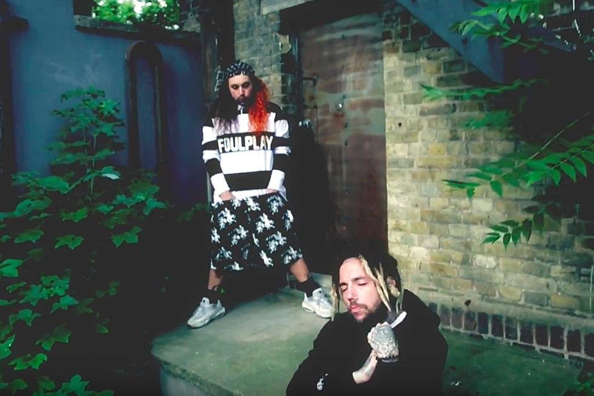
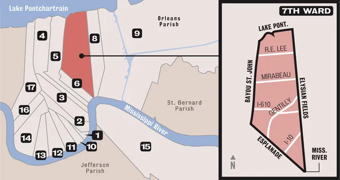

GREY ORIGINS

G*59 / GREY FIVE NINE RECORDS was founded in 2014 by $uicideBoy$ duo cousins Aristos Petrou (Ruby Da Cherry) and Scott Arceneaux Jr. ($crim). Born and bred in the 7th Ward of New Orleans, the duo of cousins created the G*59 Record Label in 2014. Both were dissatisfied with the directions of their lives and made a pact to successfully make it in the music industry, with $crim stating "There's no plan B... If this doesn't happen by the time we're 30, I'm blowing my head off." Thus the $uicideBoy$ were born, and the group broke into the underground rap scene and have sinced then gained a cult following which grows bigger every day. The duo explore topics not normally touched in the music industry, like suicidal ideation, depression, and satanism. In the beginning, the group's themes of satanism came under controversy due to associatian with devil worshipping. $crim responded to this by stating that the satanic imagery they use is only a metonym for drugs, money, and other items that have the power to manipulate people. Despite their controversy the duo's musical themes have become a core aspect of their following, with many listeners connecting to the themes and pain both have experienced. $crim also stated that “A lot of people take it as emo, or depressed music, or negative music... it’s really just connecting. It’s therapy, through music".
